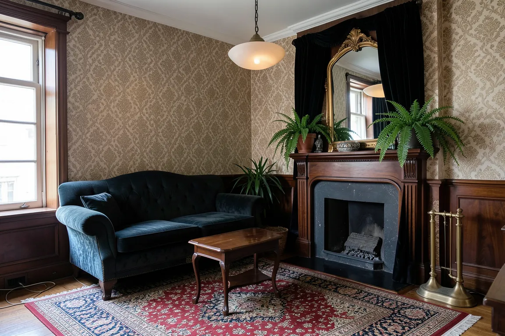

Middelklassens rom i det industrielle århundret. Maskinlaget mønster dekker vegger, gulv og møbler; mørke, mettede farger, tunge gardiner og mange gjenstander gir en tett, lukket salong rundt ildstedet.

Kjerneidé
Et hjem viser familiens smak, reiser og respektabilitet; flere gjenstander og mer mønster betyr mer komfort.
Designprinsipper
Del veggen i fotpanel, felt og fris, hver med sitt eget tapet eller sin egen maling.
Bruk dype, mettede farger: karmosinrød, flaskegrønn, plomme og brun, med gull.
Legg tekstiler i lag: et heldekkende teppe, et løst teppe oppå, en duk på bordet og et frynset trekk på peishyllen.
Grupper stolene i flere samtalesirkler, ikke én; rommet rommer mange soner.
Vis samlinger på peishyllen, på etasjerer og i skap.
Heng bilder tett på en billedlist, ramme mot ramme.
Filtrer dagslyset gjennom tre lag i vinduet: rullegardin, blonder og tunge draperier.
Antimønstre
Bare vegger uten mønster
Hvite eller lyse vegger i hovedrommene
En enkelt sentrert møbelgruppe med tomt gulv rundt